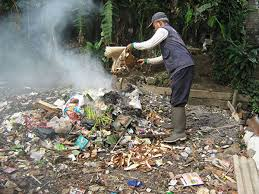
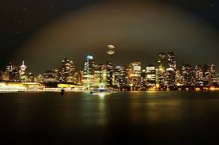
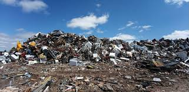
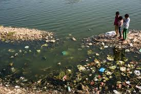

Sekarang dengan dunia yang mengalami modernisasi, banyak juga teknologi dan penerapan yang tidak ramah lingkungan. Terutama kota-kota besar yang seringkali menghasilkan polusi udara dan cahaya dari keseharian penduduknya. Juga dengan padatnya penduduk di kota besar, polusi ini merusak lingkungan dan memburukkan iklim global. Pabrik-pabrik yang setiap harinya menghasilkan limbah, penduduk yang memakai kendaraan dan juga menyebabkan macet, juga penduduk yang membuang sampah mereka dengan cara dibakar ataupun terbuang ke laut. Juga hal seperti AC berdampak kepada lingkungan sekitar. Salah satu masalah paling utama adalah pencemaran melewati pembuangan sampah sembarangan atau berlebihan. Limbah pabrik yang biasa terbuang ke perairan sehingga mencemari dan merusak ekosistemnya. Pencemaran air mengandung kotoran, virus, dan bakteri yang menyebabkan hal-hal busuk dan penyakit. Pencemaran udara juga dapat muncul banyak terutama dari kendaraan motor yang terpakai setiap harinya. Bahan bakar fosil yang terpakai mencemari udara bersama dengan asap hasil pembakaran sampah. Pencemaran udara juga akhirnya menganggu semua karena udara yang kotor dan




Kegiatan sehari-hari yang menyebabkan pencemaran: Pembuangan limbah ke perairan(pencemaran air), Penggunaan kendaraan bermotor(pencemaran udara), Buang sampah sembarangan(pencemaran tanah), lampu gedung & jalan yang tetap terang saat malam(pencemaran cahaya)